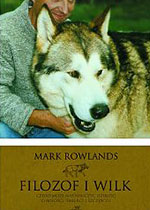

„Filozof i wilk” to książka o niezwykłej więzi, jaka wytworzyła się pomiędzy dwoma przedstawicielami różnych ras – filozofem mizantropem oraz wilkiem, który, mimo swojej dzikiej natury, stał się najbliższym towarzyszem jego życia.
Wilk to towarzysz niezwykły – gatunkowo odmienny od małp i małpiej natury człowieka. Inaczej funkcjonuje w stadzie, w życiu kieruje się moralnością zupełnie innego rodzaju. Inaczej niż małpy przeżywa czas – traktuje chwile osobno, bez potrzeby wymazywania teraźniejszości na rzecz badania subtelnych powiązań między momentami w szczególności po to, aby zbić interes na… dodatkowej kiści bananów lub też odpowiednikowi tejże w świecie człowieczym.
Wychodząc od obserwacji własnych uczuć i zachowań swego towarzysza wilka, autor, jak na filozofa przystało, skłania nas do refleksji nad podstawowymi pojęciami w życiu: moralności, koncepcji szczęścia i relacji z bliźnimi. Nie są to jednak suche rozważania. Szczególnie urzekające w tej opowieści filozofa jest wyważenie natury i ilości intymnych zwierzeń na takim poziomie, który sprawia, że czytamy bardzo prywatny dziennik z życia autora nie mając jednocześnie wrażenia nadmiernego ekshibicjonizmu z jego strony. Nawet w tak poruszających momentach, jak odejście Brenina (imię wilka) lub rozważaniach na temat własnej wiary granica nie zostaje przekroczona.
Mark Rowlands w swoich osobistych rozważaniach kwestionuje również nadmierny liberalizm psychologiczny, który wypiera tradycyjne pojmowanie dobra i zła. Wg autora, zło nadal istnieje i jest:
„Czymś co rezyduje na marginesach społeczeństwa. Ale w istocie zło przenika nas wszystkich. Przyczepia się do agresywnych ojców i uległych matek. I w nie mniejszym stopniu dotyczy uprzywilejowanych i zadowolonych z siebie harwardzkich psychologów, rzekomych ekspertów w dziedzinie zdrowia psychicznego, którzy działali jak można przypuszczać, powodowani jak najlepszymi intencjami wobec ludzkości. Ja też popełniłem wiele złych uczynków. Ty także. Zło jest czymś powszechnym, codziennym. Jest banalne.”
Książka ta jest szczególnie wartościowa dla osób badających swoje wnętrze. Autor stawia przed współczesnym człowiekiem imperatyw ciągłego badania słuszności własnych przekonań, nakłania do rozważań na temat właściwego porządku moralnego, jednocześnie wysoko umieszczając na liście wartości nasze pragnienia, traktując je jako strzały rozświetlające mrok przyszłości…
Mark Rowlands urodził się w 1962 roku w Newport, w Walii. Podjął studia inżynierskie, które w krótkim czasie zmienił na filozofię. Obronił tytuł doktora na uczelni Oxford, obecnie zajmuje stanowisko profesora filozofii na uniwersytecie w Miami.
W obszarze jego zainteresowań leżą prawa zwierząt i teorie świadomości. Największy rozgłos zdobył dzięki publikacji osobistego dziennika, będącego głęboką analizą więzi między człowiekiem i wilkiem. Wśród jego innych, istotnych publikacji książkowych na szczególną uwagę zasługują: Can Animals be Moral? ; The New Science of the Mind ; Animals Like Us oraz The Nature of Consciousness.
Rafał Miętkiewicz
+48 515 972 624
rafalmietkiewicz@icloud.com
Podaj swój adres e-mail, aby otrzymywać informację o nowych artykułach.